- Part A — Recap: how to find a policy's value (policy evaluation)
- Part B — Policy iteration: keep improving until optimal
- Part C — Value iteration: a faster single-sweep method
- Part D — Asynchronous DP: update states in any order
- Part E — Generalized policy iteration: the big picture
Course page: buntyke.github.io/rlcourse-mtech-fall26
This lecture is based on:
- Chapter 4 of Reinforcement Learning: An Introduction (2nd ed.) by Sutton & Barto
Course page: buntyke.github.io/rlcourse-mtech-fall26
Part A — Policy Evaluation & Improvement
- Given policy \(\pi\), find its value function \(v_\pi\) using the Bellman equation as a repeated update
- Sweep all states, replace each \(V(s)\) with a one-step Bellman backup
- Stop when the largest change in any state is less than \(\theta\)
\[ V(s) \leftarrow \sum_a \pi(a|s)\sum_{s',r}p(s',r|s,a)\bigl[r+\gamma V(s')\bigr] \]
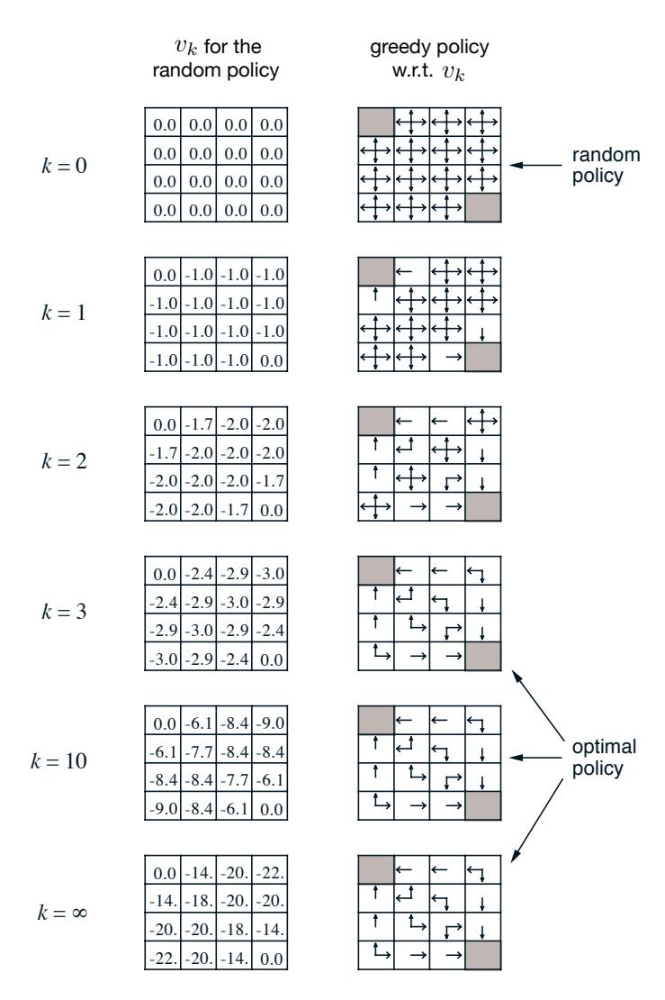
- Intuition: "Do \(\pi'\) for one step, then follow \(\pi\). If that is no worse than following \(\pi\) always, then \(\pi'\) is the better policy."
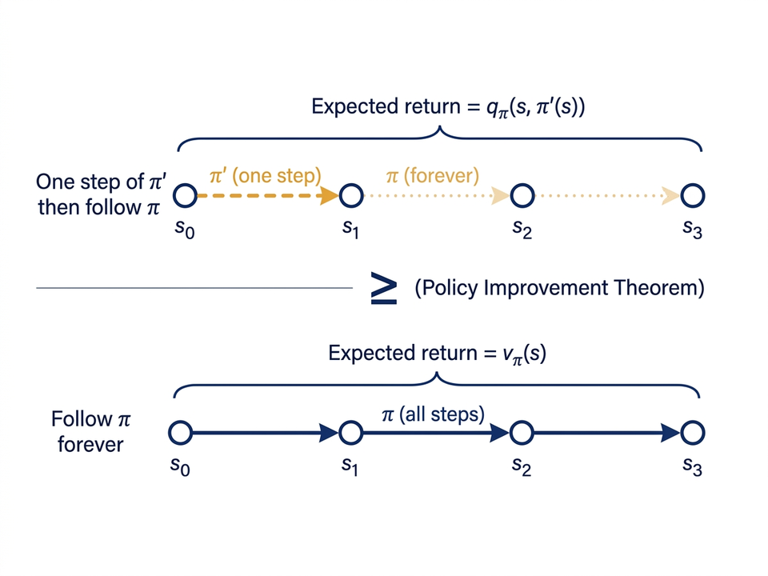
\(v_\pi(s) \;\le\; q_\pi(s,\pi'(s))\) from the assumption
\(= \mathbb{E}_{\pi'}\bigl[R_{t+1}+\gamma v_\pi(S_{t+1}) \mid S_t=s\bigr]\)
\(\le \mathbb{E}_{\pi'}\bigl[R_{t+1}+\gamma q_\pi(S_{t+1},\pi'(S_{t+1})) \mid S_t=s\bigr]\) apply the assumption at \(S_{t+1}\)
\(= \mathbb{E}_{\pi'}\bigl[R_{t+1}+\gamma R_{t+2}+\gamma^2 v_\pi(S_{t+2}) \mid S_t=s\bigr]\)
\(\le \;\cdots\;
\(\le \mathbb{E}_{\pi'}\bigl[R_{t+1}+\gamma R_{t+2}+\gamma^2 R_{t+3}+\cdots \mid S_t=s\bigr]\)
\(= v_{\pi'}(s)\) ∎
Each step applies the assumption one time step further. The chain telescopes all the way to \(v_{\pi'}(s)\).
\[ \pi'(s) = \underset{a}{\operatorname{argmax}}\sum_{s',r}p(s',r|s,a)\bigl[r+\gamma V(s')\bigr] \]
- At every state, pick the action that gives the highest value in one step
- This always satisfies the theorem's condition, so it is always at least as good as \(\pi\)
- If greedy policy equals the old policy, the old policy is already optimal

- 14 non-terminal states; actions: up, down, left, right
- Reward: −1 per step until reaching a corner (terminal); no discount
- Random policy gives the value shown on the left
- Key finding: the greedy policy is optimal after just 3 evaluation sweeps — not after full convergence
In the gridworld, "down" from state 11 leads to the terminal state (value = 0). The reward on every step is −1. What is \(q_\pi(11,\text{down})\)?
In the gridworld, "down" from state 11 leads to the terminal state (value = 0). The reward on every step is −1. What is \(q_\pi(11,\text{down})\)?
Part B — Policy Iteration
\[\pi_0\xrightarrow{E}v_{\pi_0}\xrightarrow{I}\pi_1\xrightarrow{E}v_{\pi_1}\xrightarrow{I}\pi_2\xrightarrow{E}\cdots\xrightarrow{I}\pi_*\xrightarrow{E}v_*\]
- \(\xrightarrow{E}\) evaluate the current policy fully; \(\xrightarrow{I}\) improve greedily
- Each new policy is strictly better (unless already optimal)
- Finite MDP has finitely many policies → always finishes in finite steps
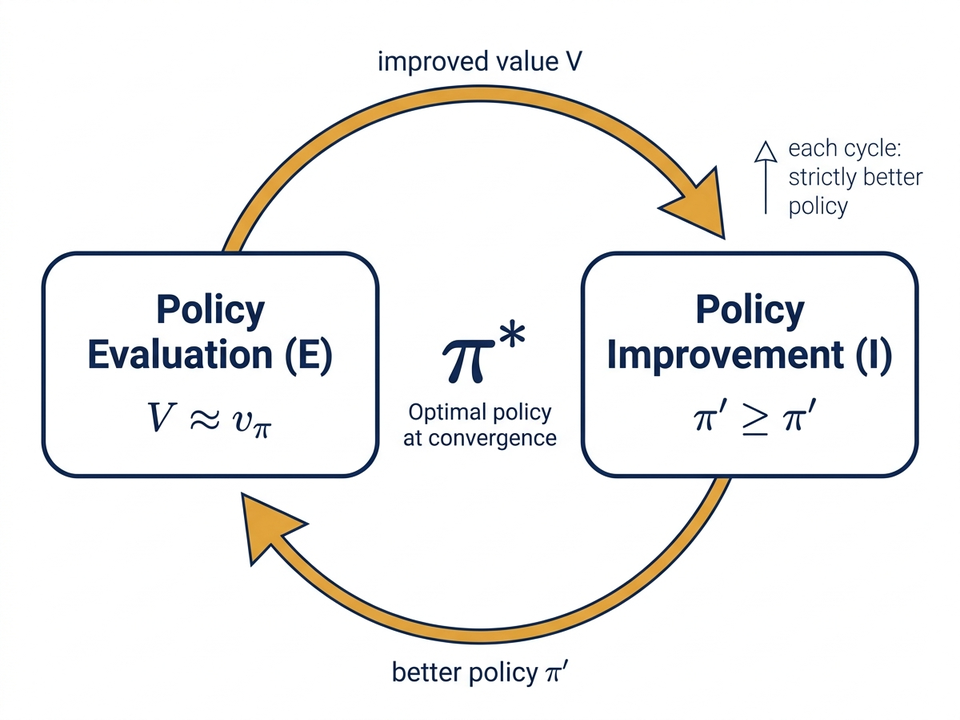
Policy Iteration (find π ≈ π*)
1. Initialization
V(s) ← any value for all s; V(terminal) ← 0
π(s) ← any action for all s
2. Policy Evaluation (repeat until V stops changing)
For each s:
v ← V(s)
V(s) ← Σ_{s',r} p(s',r | s, π(s)) [r + γ V(s')]
Δ ← max(Δ, |v − V(s)|)
Stop when Δ < θ
3. Policy Improvement
stable ← true
For each s:
old ← π(s)
π(s) ← argmax_a Σ_{s',r} p(s',r | s, a) [r + γ V(s')]
If old ≠ π(s): stable ← false
If stable → done (return V, π). Else → go to step 2Sutton & Barto, RL: An Introduction, Ch. 4.3.
- State: \((n_1,n_2)\) — number of cars at each location (max 20)
- Action: move up to 5 cars overnight between locations; cost \$2/car moved
- Revenue: \$10 per car rented; customer arrivals follow a Poisson distribution
- Policy iteration finds the best strategy in just 5 iterations
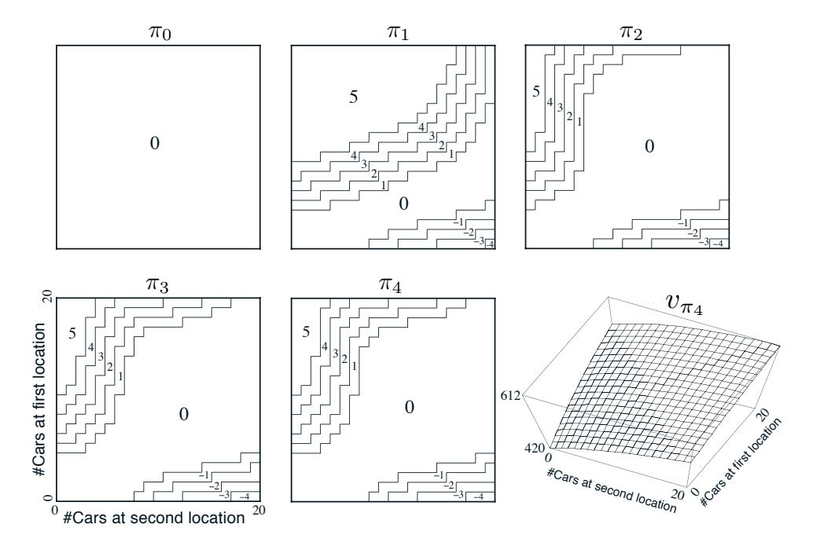
- There are \(|\mathcal{A}|^{|\mathcal{S}|\!}\) possible policies (a huge number), but policy iteration only visits a small improving chain
- Each step gives a strictly better policy, so the same policy is never visited twice
- In practice, 5–20 outer steps are enough even for large problems
- Each evaluation starts from the previous value function, so it converges fast
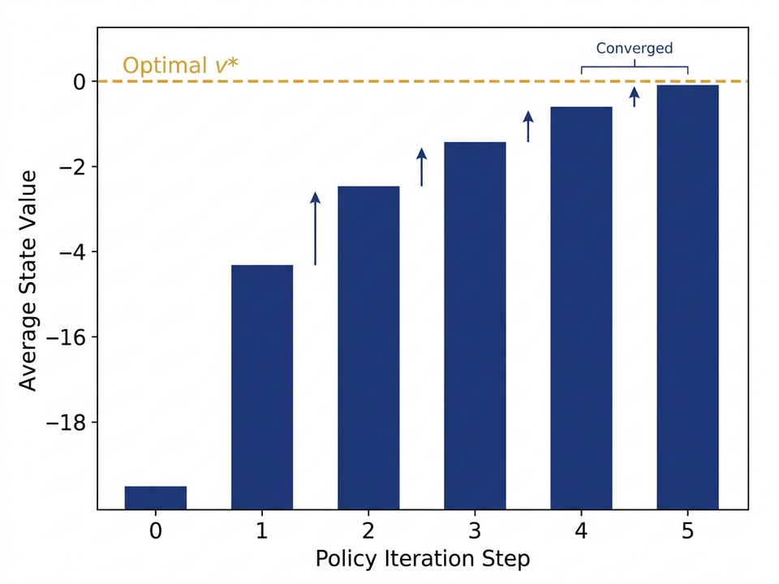
- Step 1. Each iteration gives \(v_{\pi_{k+1}} \ge v_{\pi_k}\) — policy improvement theorem
- Step 2. A finite MDP has only finitely many deterministic policies
- Step 3. A sequence that strictly improves cannot repeat → must stop
- Step 4. The only stopping point is \(\pi=\pi_*\), where Bellman optimality holds
- In-place updates (Gauss–Seidel style) are faster than using two separate arrays
- Stop evaluation early at \(\Delta < \theta\); exact convergence is never needed
- Ties in improvement: if two actions are equally good, pick either one — the guarantee still holds
- Bug to avoid: stop when the value function is stable, not just when the policy action does not change
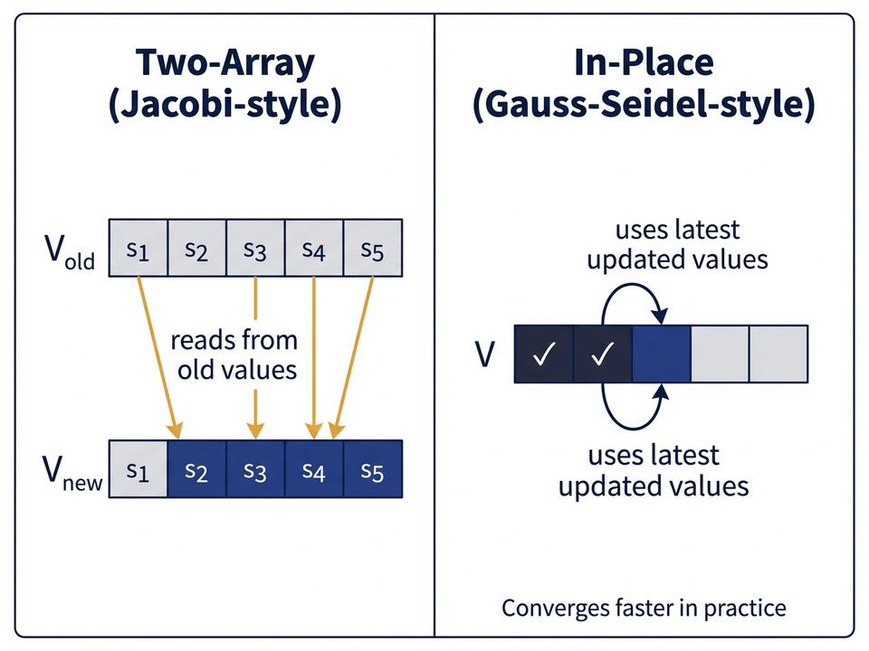
In policy iteration using \(Q(s,a)\) instead of \(V(s)\), what is the key advantage in the policy improvement step?
In policy iteration using \(Q(s,a)\) instead of \(V(s)\), what is the key advantage in the policy improvement step?
Part C — Value Iteration
- In the gridworld, the best policy was found after only 3 evaluation sweeps — not full convergence
- We can stop evaluation at any point and still improve the policy
- Most extreme case: stop after 1 sweep, then improve → this is Value Iteration
- A full family of algorithms exists between "1 sweep" and "full convergence"
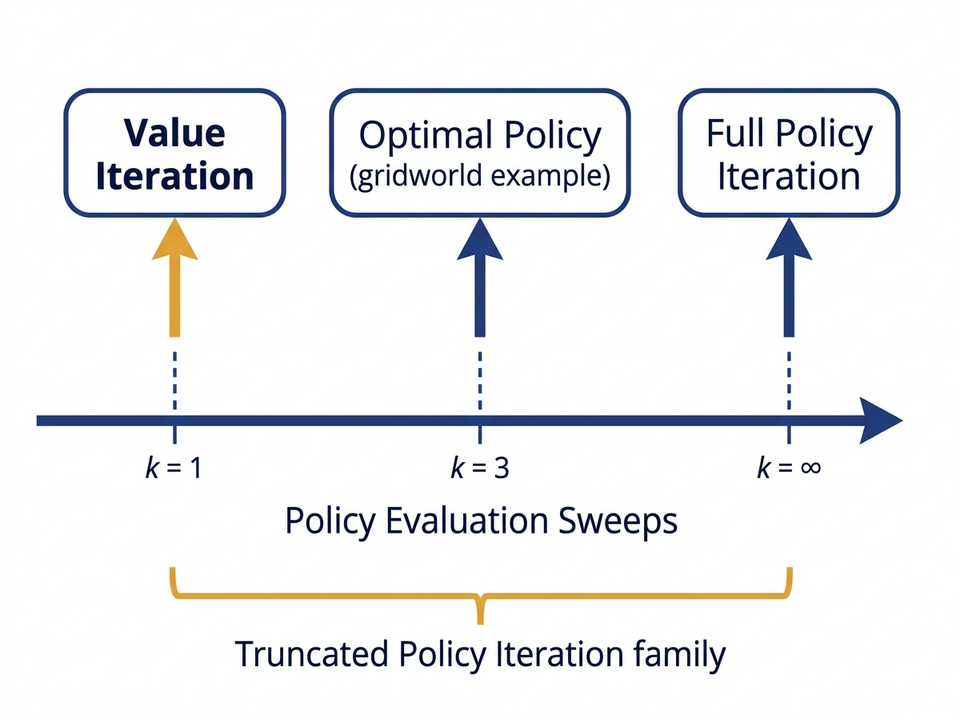
\[ V(s) \leftarrow \max_a \sum_{s',r} p(s',r|s,a)\bigl[r+\gamma V(s')\bigr] \]
| Algorithm | Update at each state | Fixed point |
|---|---|---|
| Policy Evaluation | \(\sum_a \pi(a|s)\,(\cdots)\) — weighted average | \(v_\pi\) |
| Value Iteration | \(\max_a\,(\cdots)\) — take the best action | \(v_*\) |
- Directly applies the Bellman optimality equation as an update
- Converges to \(v_*\) — same conditions as the existence of \(v_*\)
- The error is multiplied by \(\gamma < 1\) each time → error goes to zero
- There is exactly one fixed point: \(v_*\)
- Smaller \(\gamma\) → faster convergence
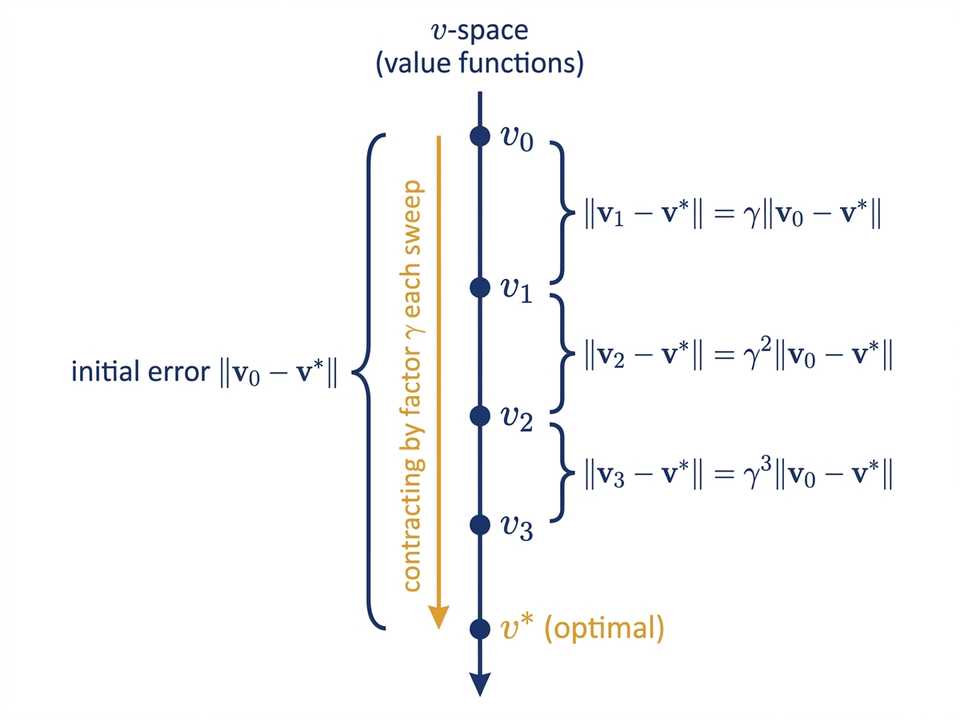
Value Iteration (find π ≈ π*)
Initialize V(s) to any value; V(terminal) ← 0
Loop:
Δ ← 0
For each s:
v ← V(s)
V(s) ← max_a Σ_{s',r} p(s',r | s, a) [r + γ V(s')]
Δ ← max(Δ, |v − V(s)|)
Until Δ < θ
Output policy: π(s) = argmax_a Σ_{s',r} p(s',r | s, a) [r + γ V(s')]Sutton & Barto, RL: An Introduction, Ch. 4.4.
- State: capital \(s \in \{1,\ldots,99\}\) dollars
- Action: bet \(a\) dollars; heads → win \$a, tails → lose \$a
- Goal: reach \$100 (reward +1); running out is a loss (reward 0)
- \(p_h = 0.4\): coin is unfair → value function sweeps converge to \(v_*\) as shown
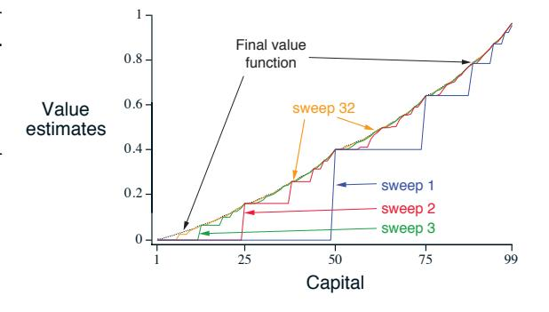
The value iteration update for action values is \(q_{k+1}(s,a) = \sum_{s',r}p(s',r|s,a)\bigl[r + \gamma \cdot \underline{\quad}\bigr]\). What fills the blank?
The value iteration update for action values is \(q_{k+1}(s,a) = \sum_{s',r}p(s',r|s,a)\bigl[r + \gamma \cdot \underline{\quad}\bigr]\). What fills the blank?
Part D — Asynchronous Dynamic Programming
- Synchronous DP must update every state in each sweep — very expensive for large problems
- Backgammon: more than \(10^{20}\) states → one sweep takes thousands of years at 1M updates/sec
- DP is still efficient relative to other methods — it runs in time that grows as a polynomial in \(|\mathcal{S}|\), not exponentially
- For very large state spaces we need asynchronous methods
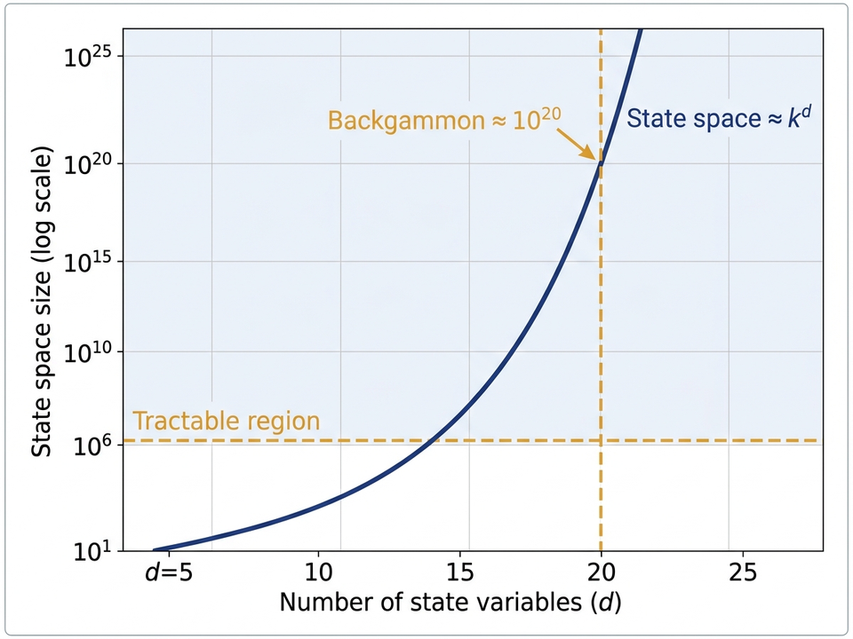
- One state can be updated many times while another is not updated yet
- Convergence rule: every state must be updated infinitely often — no state can be permanently skipped
- Can focus updates on states the agent actually visits in real time
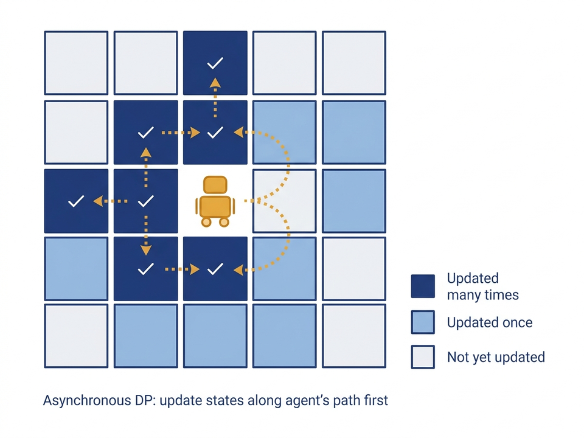
- Asynchronous VI: at each step, pick any one state \(s_k\) and apply the value iteration update to it only; repeat for all states eventually → converges to \(v_*\)
- Real-time DP: run the agent in the environment; after each transition from state \(s\), update \(V(s)\) immediately — focuses computation on states the agent visits
- Key point: skipping sweeps does not reduce total work — it redirects work to the most useful states first
Which condition must hold for asynchronous value iteration to be guaranteed to converge to \(v_*\)?
Which condition must hold for asynchronous value iteration to be guaranteed to converge to \(v_*\)?
Part E — Generalized Policy Iteration
- Policy iteration: full evaluation, then full improvement
- Value iteration: 1-sweep evaluation + implicit improvement
- Async DP: both steps happen one state at a time
- Almost all RL algorithms are GPI instances

- They compete: improving the policy makes the value function wrong for the new policy; fixing the value function may make the policy non-greedy again
- They cooperate: together they always move toward the one point where both are satisfied — the optimal policy and value function
- The fixed point: \(\pi\) is greedy w.r.t. \(V\) and \(V\) is consistent with \(\pi\) → this means \(V = v_*\) and \(\pi = \pi_*\)
- Big picture: even though neither step tries to find the optimal solution directly, together they always reach it

- Think of two lines: Line 1 = "V consistent with π"; Line 2 = "π greedy w.r.t. V"
- Evaluation moves toward Line 1; improvement moves toward Line 2
- Alternating between the two lines leads to the intersection = optimal \((\pi_*, v_*)\)
- Real geometry is more complex, but the zigzag pattern is the same idea
- DP finds the best policy in time that grows as a polynomial in \(|\mathcal{S}|\) and \(|\mathcal{A}|\)
- Checking all policies would take time that grows exponentially (\(|\mathcal{A}|^{|\mathcal{S}|}\)) — DP is much faster
- In practice, PI and VI both converge much faster than their worst-case bounds
- For very large state spaces, asynchronous DP is preferred over full sweeps
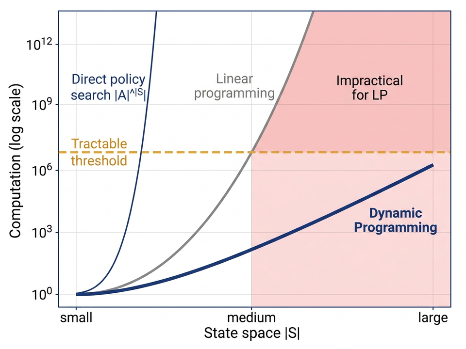
In Generalized Policy Iteration (GPI), what is true when both the evaluation and improvement steps have fully stabilised?
In Generalized Policy Iteration (GPI), what is true when both the evaluation and improvement steps have fully stabilised?
| Algorithm | Evaluation step | Improvement step | Sweeps per outer loop |
|---|---|---|---|
| Policy Iteration | Full (until \(\Delta < \theta\)) | Greedy once | Many |
| Value Iteration | 1 Bellman sweep | Implicit (\(\max\)) | One |
| Async DP | One state at a time | Greedy | Any order |
| GPI (general) | Any amount | Any degree | Flexible |
- All DP methods need a complete model \(p(s',r|s,a)\) — this is their main limitation
- GPI is the common framework — every RL method has an evaluation step and an improvement step
- DP needs a model: we must know \(p(s',r|s,a)\) for all transitions — often not available in real problems
- Monte Carlo: no model needed; estimate \(v_\pi\) by running full episodes and averaging the returns
- TD Methods: no model needed; update \(V\) after each single step using the current estimate — faster than MC
- The GPI idea stays the same — only the evaluation method changes
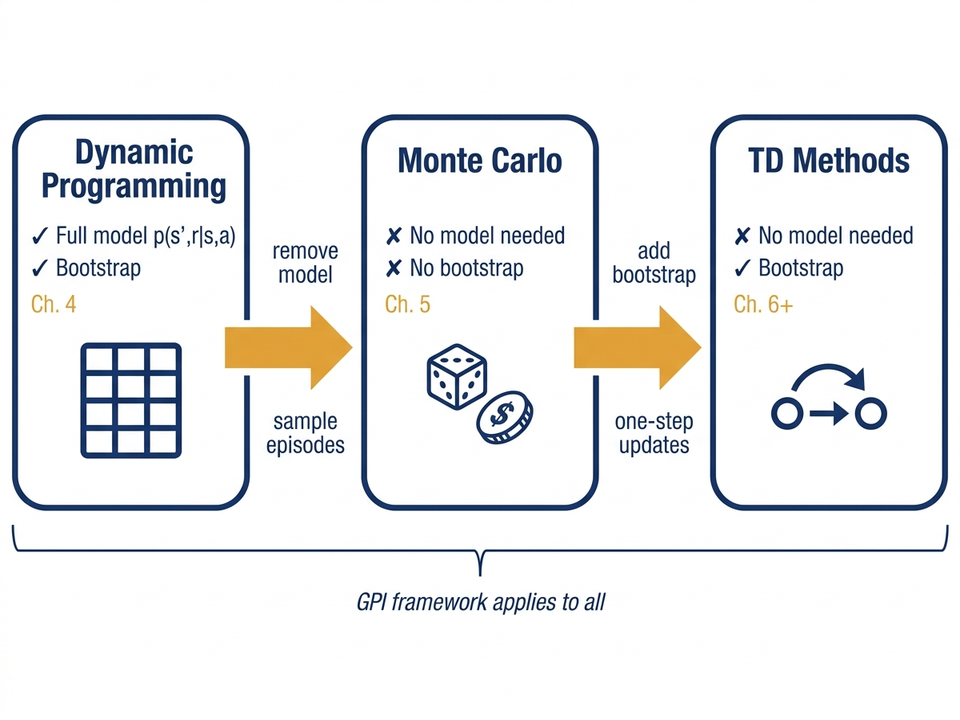
- Policy improvement theorem: using a greedy update gives a policy that is at least as good
- Policy iteration: repeat evaluate → improve until no change — always finds \(\pi_*\) for finite MDPs
- Value iteration: combine evaluate + improve into one Bellman optimality sweep; error shrinks by \(\gamma\) each step
- GPI: the universal framework for RL — evaluation and improvement together find \((\pi_*, v_*)\)
Next lecture: Monte Carlo prediction — estimate value functions from sampled episodes, no model needed.
In the Gambler's Problem with an unfair coin (\(p_h = 0.4\)), what is the best action when the gambler has exactly \$50?
Compared to Policy Iteration, Value Iteration ___.